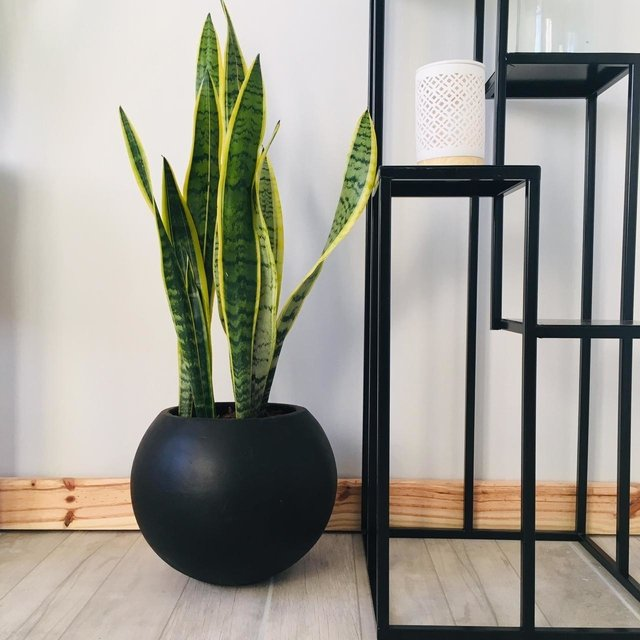

MACETA FIBRA DE VIDRIO


Es un material ultra resistente, duradero y un gran aislante térmico. Estan tratadas con pintura poliuretanica.
Las curvas y la excelente terminación hacen de esta opción una de las preferidas. Acompañan muy bien la deco,
aportan calidez.
Detalles a tener en cuenta
- Maceta de material fibra de vidrio. Podes solicitarlo con terminacion mate o brillosa.
- Colores disponibles: Blanco o Negro.
- Se puede colocar una planta de hasta 20L aprox.
MACETA FIBROCEMENTO
Al ser de fibrocemento es pesadita, resistente y duradero. Tiene un estilo minimalista y hermosa por donde la
mires. Si tu idea es colocarla en interior, te recomendamos la colocación de plato del mismo material y color para
que quede más estético.
Detalles a tener en cuenta
- El plato contiene el agua al momento de regar y además ayuda a que no se manche el piso.
- Colores disponibles: Blanco o Negro.
- Es un material frágil.
CERÁMICA


Es una muy buena opción para estanterías, mesita de luz, o quizás también para esa mesita que tenes en tu patio o
balcón. Colocándola sobre algo se va a lucir mucho mejor.
Detalles a tener en cuenta
- Colores disponibles de maceta: Blanco,Negro o Arena.
- Esta maceta cuenta con drenaje.
PORTA MACETAS


Mezcla de estilo nórdico, minimalista y bohemio.
Detalles a tener en cuenta
- Pie de Madera de 45cm alt x 30cm ancho. La maceta sobresale 5cm logrando una altura total de 50cm.
- La madera es Eucalipto en tono oscuro.
- La maceta mide 30CM ALT X 30CM.
- Colores disponibles: Blanco,Negro o Arena.
MACETA ROTOMOLDEADO

Para aquellas personas que prefieren las curvas, esta opción es ideal. Al ser más fina en la parte superior y más
ancha en lo bajo logra un diseño delicado y con presencia. Es una maceta súper liviana que cuenta con filtro UV lo
que la hace apta para exterior.
Detalles a tener en cuenta
- Material rotomoldeado. Es un proceso conformado de productos plásticos que logra un acabado super estético.
- Cuenta con drenaje. Aconsejamos pedir junto con ella el plato de pvc contenedor de agua.
- Colores disponibles: Blanco o Negro.